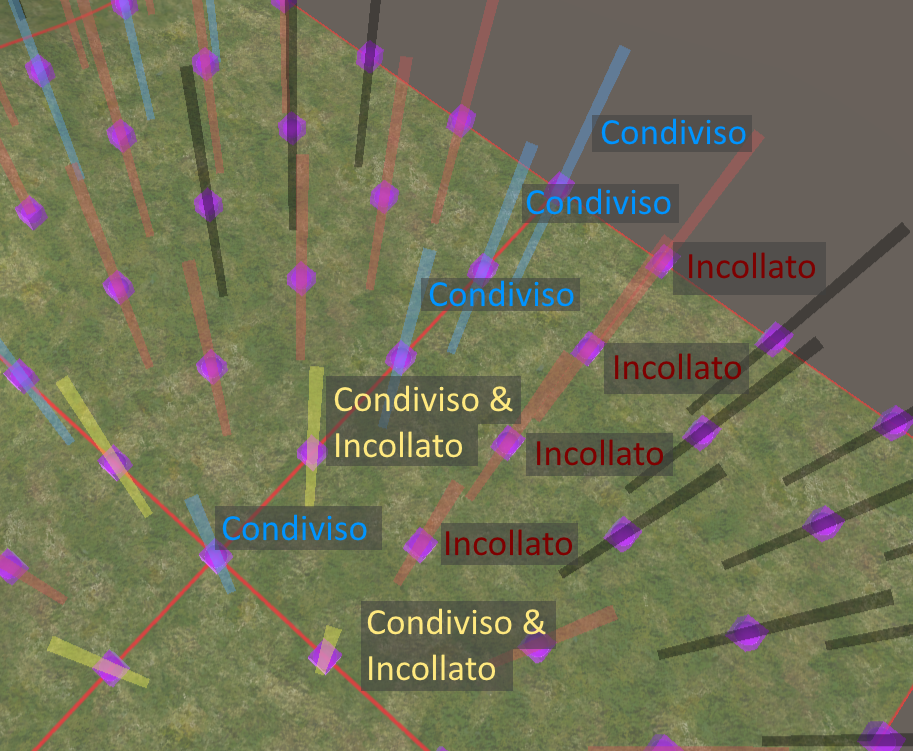
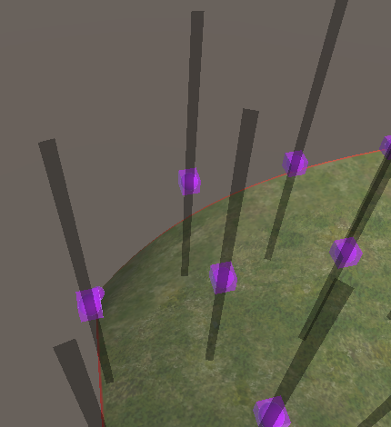

Golfzier
Golfzier
Scopo del gioco
Lo scopo del gioco è mandare la pallina da golf in buca; tuttavia la pallina non viene lanciata, ma il giocatore dovrà guidarla alla buca modificando il terreno di gioco.
Per modificare il terreno sarà necessario manipolare dei punti di controllo; tale operazione ha un costo in punteggio pari alla lunghezza dello spostamento effettuato.
Il punteggio disponibile è diverso per ogni livello, ed è visibile in alto a sinistra. È possibile tuttavia andare in punteggio negativo e recuperare i punti lungo la strada raccogliendo delle monete.
Un livello è superato quando la pallina entra in buca ed il punteggio rimanente è >= 0.
Camera
I controlli della telecamera sono i seguenti:
- W-S: Muovi avanti-indietro.
- A-D: Muovi a sinistra-destra.
- Q-E: Ruota a sinistra-destra.
- R-F: Ruota verso il basso-verso l'alto.
- Shift-Ctrl: Alza-abbassa.
Altri controlli
- Barra spaziatrice: Passa da modalità di modifica del terreno a modalità di gioco e viceversa.
- Z: Annulla l'ultima modifica.
- Y: Ripristina l'ultima modifica annullata.
- X: Attiva/disattiva visibilità dei punti lontani dal mouse.
Terreno
Il terreno è composto da una o più tiles adiacenti; ogni tile è una superfice di Bézier di grado 4. Ogni tile possiede 5x5 punti di controllo, ed i punti di confine sono condivisi con le tiles adiacenti.
Per garantire la continuità del terreno, sono forzate delle regole di incollamento sui punti vicini al confine di ogni tile.
Punti di controllo
Il giocatore può alterare il mondo di gioco spostando sull'asse verticale I alcuni punti di controllo, modificando quindi la superficie risultante.
Ogni punto di controllo ha un'altezza massima (cubo blu),
una minima (cubo rosso),
ed una di partenza (cubo viola).
Il punto di controllo vero e proprio è rappresentato da una sfera, che può essere spostata cliccando su di essa con il tasto sinistro del mouse e tenendo il tasto premuto fino durante il trascinamento.
Ci sono inoltre diversi tipi di punti di controllo, che reagiscono diversamente all'input dell'utente. Sono distinguibili in base al colore della linea che collega minimo e massimo. La differenza di comportamento tra i punti serve a garantire il mantenimento delle regole di incollamento tra superfici adiacenti.
Singoli
I punti di controllo identificati in nero sono punti singoli. Muoverli modificherà la superficie di Bézier del terreno, senza avere altri effetti.
Condivisi
I punti di controllo identificati in azzurro sono punti condivisi. Questi si trovano al confine tra due tiles. Muoverli muoverà anche i punti adiacenti verso l'interno delle due tiles. Tutti i punti affetti si muoveranno della stessa distanza.
Incollati
I punti di controllo identificati in rosso sono punti incollati. Sono tutti adiacenti ad almeno un punto condiviso, e i loro limiti di altezza minima e massima dipendono dall'altezza del punto condiviso cui sono associati. Muovere un punto incollato di una certa altezza causerà uno spostamento inverso al punto incollato opposto.
Condivisi ed incollati
I punti di controllo identificati in giallo sono sia condivisi che incollati. Questo avviene in ogni area dove 4 tiles diverse hanno un vertice in comune. Quel vertice sarà un punto condiviso, e tutti i 4 vertici a lui adiacenti saranno sia condivissi tra due diverse tiles, che incollati attraverso il punto condiviso dalle 4 tiles. Muoverli causa un unione dei comportamenti dei punti condivisi e di quelli incollati.
Fissi
Alcuni punti di controllo non hanno la linea ed i cubi di massimo/minimo. Questi punti non posssono essere mossi.

Monete
In alcuni livelli sono presenti delle monete. Le monete saranno raccolte quando la pallina si avvicina ad esse, ed ogni moneta aggiunge 5 punti. Per questo motivo è possibile andare in negativo durante la fase di manipolazione del terreno, ed il livello può essere vinto se il punteggio torna in positivo grazie alle monete raccolte.
Piattaforme
Sono inoltre presenti delle piattaforme che possono avere effetti diversi sulla pallina.
Piattaforma di accelerazione
Le piattaforme verdi imprimono un'accelerazione notevole sulla pallina.
Piattaforme di rallentamento
Le piattaforme rosse rallentano notevolmente la pallina.
Piattaforme di salto
Le piattaforme gialle fanno saltare la pallina.